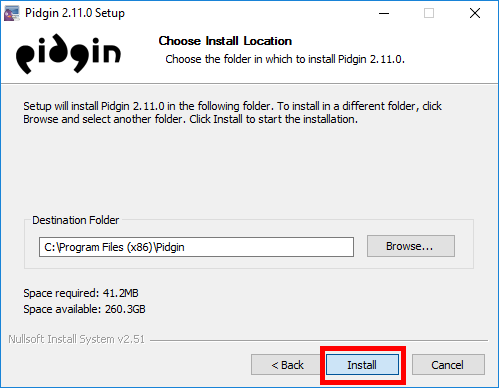
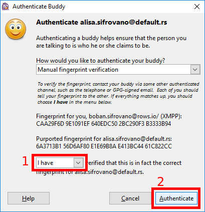

2.1. Preuzimanje Pidgin-a
Da bi ste intsalirali Pidgin, predhodno ga morate preuzeti sa interneta, što je najbolje da
uradite sa zvaničnog sajta Pidgin-a
pidgin.im/download/.
Figure 1: Preuzmite Pidgin sa interneta.
Figure 2: Sačvekajte da preuzimanje počne.
Figure 3: Sačuvajte preuzeti .exe fajl na vašem računaru.
Figure 4: Kada se fajl preuzeo, pokrenite ga iz sa vašeg računara.
2.2. Instaliranje Pidgin-a
Kada pokrenete preuzeti instalacioni fajl, prođite kroz uobičajenu proceduru
instaliranja programa na Windows-u klikćući "Next".
Figure 5: Početak instalacionog čarobnjaka (eng. Instalation Wizard).
Pritisnite Next.
Ukoliko vas upozori da Adium nije Eplov, slobodno ga pokrenite.
Figure 6: Prihvatite ponuđenu GPLv2 licencu. Uz Pidgin neće biti instlirani
nikakav dodatni neželjeni softver. Pritisnite Next.
Figure 7: Možete napravit Desktop prečicu (eng. desktop shortcut).
Pritisnite Next.

Figure 8: Možete promenit putanju gde će Pidgin biti instaliran, ali je
najbolje da ostavite podrazumevanu putanju. Pritisnite Next.
Figure 9: Sačvekajte da se instaliranje završi i otakuju,
prekopirajui instaliraju svi fajlovi, i kada se završi pritisnite Next.
Figure 10: Kada se instaliranje završi pritisnite Finish.
3. Dodavanje naloga u Pidgin-u
Kada ste instalirali Pidgin možete ga pokrenuti, otvoriće se novi prozor i
poželeti vam dobrodošlicu.
Figure 11: Kliknite "Add..." kako bi ste dodali nalog.
Ukoliko nemateveć postojeći nalog, unesite željeno korisničko ime (mi
koristimo boban.sifrovano korisničko ime) kao i server (mi koristimo rows.io
server) i šifru koju želite i onda štiklirajte kvadratić "Create this new account
on the server".
Ukoliko već imate nalog, nemojte štiklirate kvadratić za kreiranje novog naloga.
Ako ne znate koji XMPP server da koristite, listu javnih XMPP servera možete naći na
list.jabber.at.
Figure 12: Izaberite XMPP protokol, unesite korisničko ime, server kao i
šifru za taj nalog.
Figure 13: Ukoliko ste registrovali novi nalog pitaće vas da potvrdite korisničko
ime i šifru, a može vam dati, zavisno o servera na kome se registrujete
i link ka CAPTCHA veb strani i josš jedno polje gde treba uneti tačno
karaktere sa CAPTCHA-e.
Figure 14: Ako sve unesete ispravno, obavestiće vas o uspešno
registovanom novom nalogu.
Figure 15: I ukoliko je sve prošlo kako treba bilo da sre registrovali novi
nalog ili dodali postojeć, vaš ekran bi trebalo da izgleda ovako.
Mi koristimo Alisa.Sifrovano kao korisničko ime i default.rs kao
XMPP server, a vi odaberite vaše korisničko ime i ako želite drugi server.
Figure 13: Može vam reći da URL nije dobar...
Figure 14: I onda morate uneti adresu XMPP servera kao i port
(podrazumevan port za XMPP servere je 5222).
Figure 15: Onda će se otvoriti novi prozor koji će tražiti da potvrdite
korisničko ime i šifru, a zavisno od servera može vam dati i link ka
CAPTCHA veb strani i još jedno polje u koje treba da unesete slova i
brojeve prikazane na datoj veb strani CAPTCHA-e.
4. Podešavanje Pidgin-a
4.1. Generisanje OTR kluča
Kada ste podesili XMPP nalog, potrebno je da kreirate vaš jedinstveni OTR ključ.
Figure 16: Iz glavnog Pidgin prozora izaberite "Tools" -> "Plugins".
Figure 17: Štiklirajte "Off-The-Reccord Messaging" i kliknite na "Configure Plugin".
Ukoliko nemate opciju "Off-The-Reccord Messaging" unutar prozora za konfigurisanje Pidgin dodataka,
OTR dodatak za Pidgin-a možete ptreuzeti i instalirati sa sajta:
otr.cypherpunks.ca .
Figure 18: Ukoliko nemate "Off-The-Reccord Messaging" dodatak unutar
Pidgin-a preuzmite ga i instalirajte sa sajta
otr.cypherpunks.ca.
Figure 19: Pritisnite "Generate" dugme kako bi ste generisali vaš jedinstveni
OTR kluč.
Figure 20: Pidgin će vas obavestiti kada je ključ generisan.
Figure 21: Kada se OTR ključ generiše dobićete OTR otisak (eng. OTR
fingerprint) od 40 heksadekadnih karaktera. Taj otisak nije tajna i morate
ga reći osobama sa kojima želite da vodite šifrovanu konverzaciju.
5. Dodavanje kontakta
Kada imate namešten XMPP nalog i OTR ključ samo vam fali još kontakt
sa kojim možete šifrovano da razmenjujete poruke.
Ono što treba naglasiti je da i kontakt osoba mora koristi isti protokol kako bi ste komunicirali
sa njom, i da mora imati svoj OTR ključ.
Međutim kontakt ososba ne mora imati nalog na istom serveru na kome imate i vi, samo je
važno da ima nalog na nekom XMPP serveru kao i vi.
Figure 22: Iz glavnog Pidgin prozora izaberite "Buddies" -> "Add buddy..."
Figure 23: U novootvorenom prozoru unesite puni ID kontakta (u našem
slučaju to je alisa.sifrovano@default.rs) i eventualno ime tog kontakta.
Kada dodate kontakt, morate sačekati da vas osoba koju ste dodali odobri za svog kontakta.
Takođe može se desiti da vas neko dodada u njegove kontakte i onda ćete vi dobiti obavešetenje
o tome i moći da odlučite da li takv zahtev za stupanjem u kontakt želite.
Savet je da odobravate samo kontakte za koje znate ko su.
Figure 24: Ako neko doda vas za svog kontakta možete ga odobriti ili ne u
zavisnosti da li znate ko je ta osoba.
6. Šifrovana konverzacija
Sada kada imate i kontakta možete započeti konverzaciju. Samo što ona
neće biti šifrovana dok to sami ne omogućite.
Figure 25: Kao što možete videti konverzacija nije privatna.
Figure 26: Potrebno je da kliknete na crveni "Not private" tekst u donjem
desnom uglu konverzacionog prozora i odaberete "Start private conversation".
Figure 27: Posle čega je potrebno da verifikujete sagovornika iako je dalja
konverzacija šifrovana kako bi bili sigurni da neki napadač izmedju vas i
vašeg kontakta ne pokušava da vas prevari i predstavi se kao vaš kontakt
(tzv. MiTM napad).
Figure 28: Nakon toga otvoriće sa novi prozor za verifikaciju kontakta.
Izaberite motod verifikacije (preko pitanja i odgovora, zajedničke tajne, ili
jednostavno uporedite OTR otiske).

Figure 29: Mi biramo upoređivanje OTR otisaka jer je naš sagovornik u istoj
prostoriji pa možemo se uveriti da je to baš njegov OTR otisak. Izaberite
"I have" i onda "Authenticate".
Figure 30: Kada obavite OTR verifikaciju videćete da je konverzacija pri-
vatna i šifrovana i posaće u donjem desnom uglu "Private".
Nakon ovoga sva konverzacija sa vašim kontakto me šifrovana.